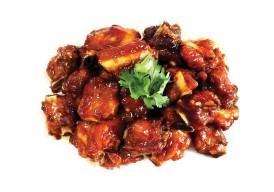
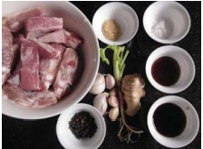
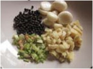
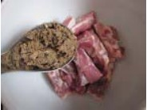
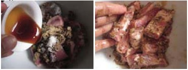
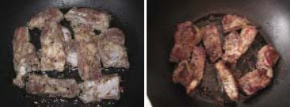

Tip&Picks
By Chef AJUMA
our cooking "BIBIMBAB"
Fry Spareribs with herbs
กระดูกหมูทอดกระเทียมพริกไทย

INGREDIENTS (คลิก)
DIRECTION (คลิก)
I have to confess this is my weakness and the only reason I could not become a vegetarian. I
know it fat, but it taste so good, especially if you can marinate the meat overnight. This is how I
marinate also chicken and pork shoulder for barbecuing and it's always well consumed by my friends
and family.
You could also make a small sauce of ground roasted chilli, fish sauce and lime juice mixing
together. I was too hungry this morning and could not stop myself, only now I think of the sauce. I had it with a plate of steamed rice.
INGREDIENTS
| Ingredients |
Serves 2 |
 |
| Garlic |
6 cloves |
| Black pepper |
1 tablespoon |
| Ginger |
1 tablespoon |
| Coriander root |
1 |
| Spareribs |
300 grams |
| Oyster sauce |
1 tablespoon |
| Soy sauce |
1.5 tablespoon |
| Salt |
2 teaspoon |
| Sugar |
2 teaspoon |
DIRECTION
- Beat together the first 4 ingredients together until become a fine paste.

- the sparerib in the mix bowl; add the paste of mixed herbs.

- Season with sugar, salt, oyster sauce, soya sauce and knead gently, so the meat absorbs all the
ingredients.

- Cover the bowl and keep in the fried for 30 minutes before frying or best is to keep over night.
- When fry, use little of frying oil, keep the low flame, otherwise the meat will be burnt before
thoroughly cooked.

- I love having this fried spareribs with fresh coriander, spring onion and tomato. These fresh
vegetables make me feel a little less of the fat.
- Serve Fry Spareribs with herbs with hot steamed rice.
กลับไปด้านบน (Top)